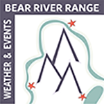

Bear River Range
Weather & Events
Explore the Bear River Range
☰ Menu
Home
Preston
Soda Springs
Fish Haven
Storm Center
Gallery
Preston Idaho
Weather Conditions
News & Events
Historical Sites & Local Attractions
Outdoor Recreation Information
Dining, Shopping, & Accomodations